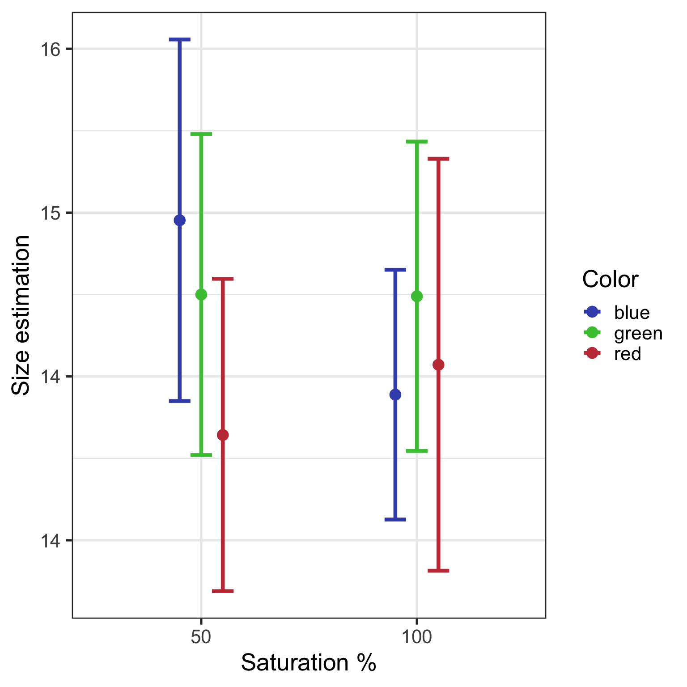
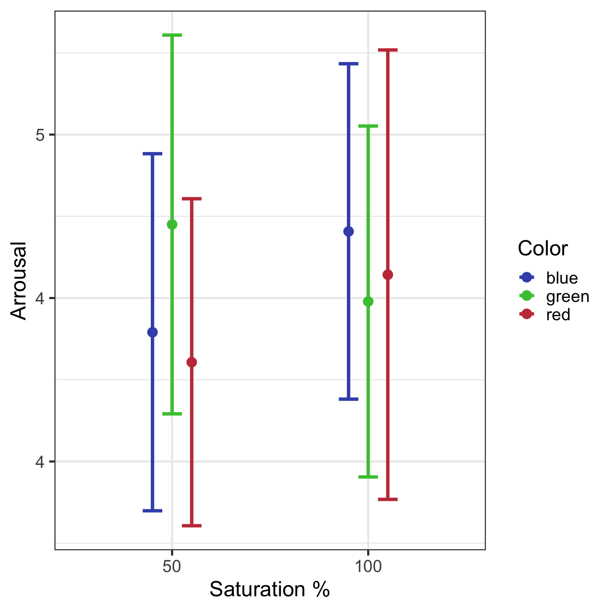

Original work
Hagtvedt, H., & Brasel, S. A. (2017). Color saturation increases perceived product size. Journal of Consumer Research, 44(2), 396-413.
Team MA Spring 2021
- Anaïs Merz
- Nemanja Sobajic
Abstract
This research demonstrates a visual phenomenon with broad implications for consumers: the perceived size of products depends on the saturation of their color. Results from six experiments, employing objects and products with various shapes and hues, show that increasing color saturation increases size perceptions. This influence is explained by the tendency for saturated color to capture attention, which, in turn, is explained by the arousal that saturated color stimulates. This research also demonstrates several downstream outcomes of the effect of saturation on size perceptions: evaluations are more favorable—and willingness to pay is higher—for products with high (low) saturation when usage goals call for large (small) size. Additionally, participants choose more of a product to fill a container with higher saturation. Further, the saturation of an object’s color affects the perceived size of its surroundings, such that when a product with high (vs. low) saturation is used as a benchmark, the environment is perceived to be comparatively smaller (vs. larger). Implications for aesthetics, design, sensory marketing, and related topics are discussed. Lastly, to aid future color research, appendix A outlines general challenges and recommendations in connection with the conceptualization, manipulation, and measurement of color.
Replication
We ran a direct replication of experiment 1 to experiment 4 of HadHagtvedt & Brasel (2017). While the authors ran different samples for each of their experiments, we decided to use one larger subject pool and run all experiments (ie tasks) within-subject (in randomized order). Clearly there are benefits for each of these approaches, one could argue that repeating similar tasks would have transfer influences, on the other hand having a much larger sample (the smallest sample size in the original work was 56, in our study we collected 261 participants) gives us a better power to detect even small effects.
A second, more relevant deviation from the original work is the lab-online difference. The authors collected their data in the lab with standardized calibration on the same monitors. We ran our sample online, meaning that we do not have control on setup and color calibration. We will get back to this point in the caveats below.
Demographics
The original paper had the following number of participants in each experiment:
- Exp1 56
- Exp2 58
- Exp3 80
- Exp4 160
Overall we collected data from 328 participants. Two pre-registered attention checks were built into the questionnaire which had to be passed both for inclusion. This step reduced the sample to: 270 participants. Finally we asked participants whether they are color-blind - this step removed two participants.
After aplying these exclusion criteriawe ended up with 261 participants (56.4% female). Female participants were on average M = 44.8 years, SD = 11.3 years, male participants were M = 41 years, SD = 8.5 years.
Experiment 1 - The Cube (Original Study 1)
Experiment 1 tests a simple idea - color saturation changes size perception of objects. In the original it says: `Participants are exposed to cubes with high- versus low-saturation color and identify which one they perceive to be larger.’

While setting up the experiment we added two additions in the experimental setup: 1) instead of having just two levels (high-low saturation) we decided to use 4-levels of saturation: 25%, 50% 75%, 100% (as can be seen in Figure 1). We also added an additional answering option ‘the same’ (in the original work the options were ‘left’ or ‘right’ to identify the larger cube). Hence we ensured that participants had the option to state that they perceive the cubes as having the same size.
We used binary choices on the one side (counterbalanced) cubes with either [25%, 50%, or 75%] saturation on the other left side 100% saturation.
Either left or right (direct replication)
Figure 2 plots the results for each of the three conditions - 25 v 100, 50 v 100 (the original condition) and 75 v 100. It becomes clear that we nicely replicate the finding of the authors with consistent larger judgments for the higher saturation condition (ie 100). Following the analysis in the original work, we ran chi2 tests for each of the three conditions, revealing significant differences for the
25 condition
Chi-squared test for given probabilities
data: table(cube_A2_25$response, cube_A2_25$Sat)
X-squared = 6, df = 1, p-value = 0.0250 condition
Chi-squared test for given probabilities
data: table(cube_A2_50$response, cube_A2_50$Sat)
X-squared = 11, df = 1, p-value = 0.00175 condition
Chi-squared test for given probabilities
data: table(cube_A2_75$response, cube_A2_75$Sat)
X-squared = 10, df = 1, p-value = 0.001Pretty cool!
Left or right or simply the same.
Anais and Nemanja came up with a question - but what if people want to say - ‘hey these two cubes look the same size?’. Extension to the above experiment 1 - let us add a third answering option where participants can either say ‘left’ or ‘right’ or ‘same’ (for both having the same perceived size.)
Figure 3 shows the results of this little adventure. Hmm - clearly there is a strong preference for participants choosing the ‘same’ size option (in grey). This effect seems to depend on the saturation (the distance between the left and right cube) - the smaller the difference, the harder it is to keep the cubes apart. Inspecting the cell sizes in the different conditions we see that for 25 and 50 the percentage of left-right answers is quite small.
# A tibble: 9 × 5
# Groups: Sat [3]
Sat response n sum perc
<fct> <fct> <int> <int> <dbl>
1 25 0 1 36 0.0278
2 25 1 3 36 0.0833
3 25 2 32 36 0.889
4 50 0 5 37 0.135
5 50 1 8 37 0.216
6 50 2 24 37 0.649
7 75 0 15 54 0.278
8 75 1 14 54 0.259
9 75 2 25 54 0.463 So, running tests on this does not really make sense, but we can at least check the 75 condition:
75 condition
Chi-squared test for given probabilities
data: table(cube_A3_75$response, cube_A3_75$Sat)
X-squared = 4, df = 2, p-value = 0.1As one would expect from the table above - we find no significant preference for left or right - just by adding a ‘same’ option in our experiment.
Experiment 2 - Laptops (Original Study 3)
In the original paper study 2 was run with an eye-tracker recording, in addition to eye-movements also pupil dilation. We did not have an eye-tracker at hand for this study - so we moved on to the original study 3 asking whether color saturation has an attention grabing effect, an effect on arousal and an effect on size perception. Hagtvedt and Brasel (2017) only ran one color (red). As different colors have different attention grabing effects, we extended the material to three colors (see Figure 4).
In the original study laptops were shown in a projection on the wall, we, again, use our online sample. Here is what we are looking for - results from study 3 (p. 400) in Figure 5.
Let’s first plot what we find for the three colors:

Let us first look only at the red stimuli - they were also used in the original. We find a non-significant main effect for saturation with Mhigh = 14.5, SDhigh = 1.6 vs. Mlow = 14.3, SDlow = 1.8, F(1, 82) = 0.29, p = .59, eta2 = 0.
Df Sum Sq Mean Sq F value Pr(>F)
Sat 1 0.9 0.857 0.29 0.59
Residuals 82 245.2 2.990 In addition we also look at the whole model with 3 color levels and 2 saturation levels.
Df Sum Sq Mean Sq F value Pr(>F)
Color 2 6 3.04 1.15 0.32
Sat 1 1 1.22 0.46 0.50
Color:Sat 2 6 3.21 1.21 0.30
Residuals 262 694 2.65 Again, not a lot going on for saturation (F = 0.46) or the three different colors we used (F = 1.15), also the interaction does not show an effect.
The authors also found effects of saturation on arousal and mood. We plot the averages for these dependent measures in Figure 7 and Figure 8.

Checking with a simple ANOVA for an effect on arousal - no significant effect is found.
Df Sum Sq Mean Sq F value Pr(>F)
Color 2 2 1.05 0.31 0.73
Sat 1 1 0.83 0.25 0.62
Color:Sat 2 4 1.99 0.60 0.55
Residuals 262 878 3.35 Again checking with a simple ANOVA we see no significant effect is found.
Df Sum Sq Mean Sq F value Pr(>F)
Color 2 6 2.94 0.78 0.46
Sat 1 1 0.60 0.16 0.69
Color:Sat 2 1 0.35 0.09 0.91
Residuals 262 986 3.76 So overall we do not find any effects of saturation on estimated size, arrousal or mood.
Experiment 3 - Suitcases (Original Study 4)
Intention could have an influence on the size effect the authors found - so in their next experiment an ‘image of an orange carry-on suitcase projected on a large screen, which served as the basis for completing paper questionnaires. The carry-on was either high or low in color saturation’. In addition the goal of a potential purchase process was manipulated: Goal manipulation: ‘Imagine that you want to purchase a carry-on suitcase that is large enough to fit plenty of your belongings’ vs. ‘small enough to fit easily into an overhead storage compartment’.
What Hagtvedt and Brasel were looking for is the following interaction: ‘We expected participants with the goal of a large (vs. small) carry-on to prefer the one with high (vs. low) color saturation, given the hypothesized influence of color saturation on perceived size.’
So - lets see if we can replicate this effect.
We use the 4 levels of saturation (instead of two in the original work) as can be seen in Figure 9.
Plotting Figure 10 we see that there are hardly any differences between the two targets large or small and, judging visually, no main effect of saturation.
We qualify this with a simple ANOVA - no significant effect of saturation or target (ie goal) found, in addition the interaction is not significant either.
Df Sum Sq Mean Sq F value Pr(>F)
Sat 3 5 1.79 0.73 0.54
target 1 1 1.26 0.51 0.47
Sat:target 3 6 1.95 0.79 0.50
Residuals 256 628 2.46 The same is true if we use willingness to pay (prize) as a dependent variable.
Df Sum Sq Mean Sq F value Pr(>F)
Sat 3 1784 595 1.02 0.38
target 1 1036 1036 1.78 0.18
Sat:target 3 219 73 0.13 0.95
Residuals 256 149122 583 So, again we do not find any effects of saturation on the quality evaluation or estimated prize.
Experiment 4 - Couches (Original Study 6)
For our final replication we look at an effect of saturation on judgements of the environment of an object. The authors write: ‘We expected that a room’s ceiling height would appear comparatively lower when the color of a benchmark in the room —an ottoman— is high (vs. low) in saturation.’
We replaced the ottoman with a couch, used the same saturation levels but added two additional colors (see Figure 11).
Plotting Figure 12 we see that there are hardly any differences between the two saturation levels and also (as expected) no effect of color.
Runnning the ANOVA on the data we find no significant effect of saturation or color and no interaction.
Df Sum Sq Mean Sq F value Pr(>F)
Sat 1 265 265 0.24 0.62
Color 2 142 71 0.07 0.94
Sat:Color 2 337 168 0.15 0.86
Residuals 256 278201 1087 Caveats
As mentioned above we did not replicate the original studies exactly. We used slighty different objects and additional saturation levels. More importantly we used the same participants again in a within-subjects design in an online experiment instead of a lab study. Nevertheless in our study 1 we see the same effect of saturation on size as the authors did in their study 1 - so in principle the effect can be replicated but only for the cubes (without adding an option to judge the cubes as having the same size - then this effect also goes away).
BUT: in study 2 we do not find any effects of saturation on size, arousal or mood; in study 3 we do not find any effects of saturation on evaluation or prize; in study 4 we do not find any effects of saturation on guessed height.
I was quite suspicious about the described effects in the original work and my confindence in the effect of saturation on size did not really increase after this exercise.
References
Hagtvedt, H., & Brasel, S. A. (2017). Color saturation increases perceived product size. Journal of Consumer Research, 44(2), 396-413.